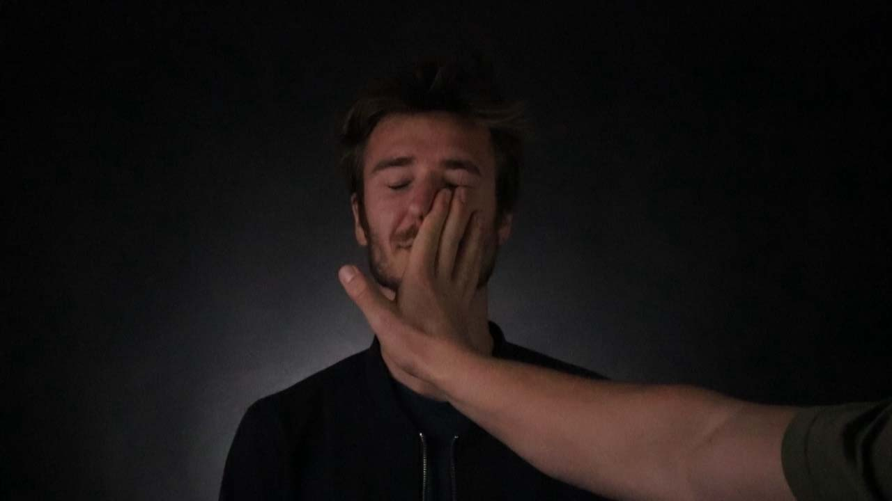
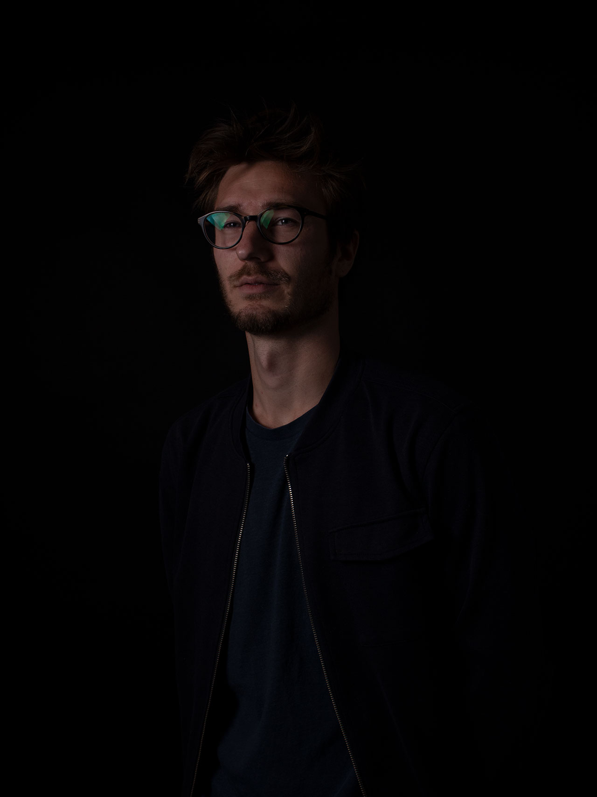

Projekt Selvportræt

Selvportræt
Klient: Studie Projekt
Dato d 7. december 2021
På 1 semester var fotografi en af mine fokus punkter
Målet med dette billede var at vise en anden side af mig selv og prøve nye ting af.
Billedet kan bl.a. bruges til hjemmesiden her og til profilbillede.

Selvportræt
Klient: Studie Projekt
Dato d 7. december 2021
Målet med biledet her var at vise en mere seriøs side af mig selv.
Billedet kan bruges som probillede på diverse platforme og bruges her på min egen hjemmeside.